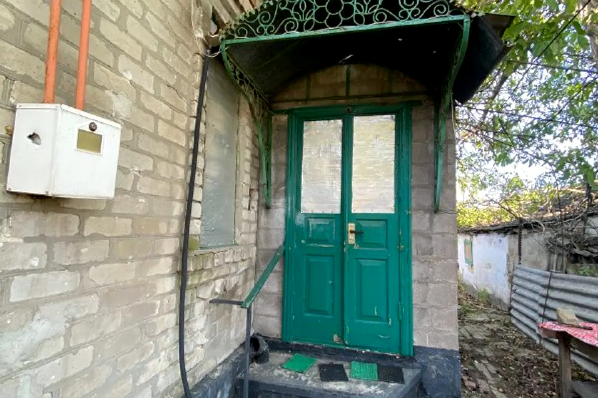

Новостройки под ипотеку появятся в Донецке и других городах ДНР

Строительство жилых домов под ипотечное кредитование запланировано не только в Мариуполе: площадки выделены в Донецке, Макеевке, Новоазовске и Тельманово.
Что сообщил глава правительства ДНР
Об этом РИА Новости рассказал председатель правительства ДНР Евгений Солнцев: «Будем строить через месяц в городе Донецке, был инвесткомитет с главой ДНР Денисом Пушилиным, на котором был одобрен проект в Донецке. Через месяц мы выйдем туда на стройку. Надеюсь, первые новые дома мы увидим в столице ДНР уже в этом году, не только в Мариуполе, но и в Донецке».
Разрешения и площадки
Застройщикам выдано 10 разрешений на строительство. Земельные участки выделены в пяти городах республики: помимо Мариуполя — в Донецке, Макеевке, Новоазовске и Тельманово.
Почему появилось доверие к ипотеке
По словам Солнцева, повышенный спрос на жильё и льготная программа под 2% сформировали у застройщиков доверие к ипотечному механизму. Дополнительно на рынок влияет приход новых банков — это ускоряет и строительство, и одобрение кредитов.
Контекст
Новость 2024 года показывает, с чего начинался нынешний бум: сегодня в новых регионах в стройке уже более 3 млн кв. м многоквартирного жилья, а Мариуполь стал лидером страны по темпам роста цен на новостройки.